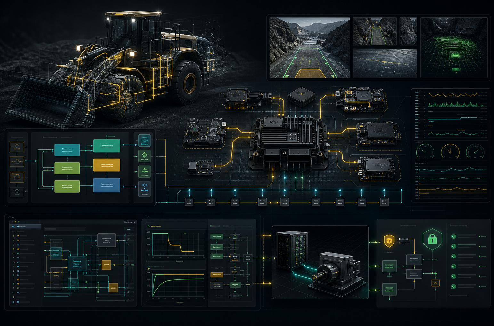

AUTOSAR, Embedded C, C++, MATLAB/Simulink, RTOS, CAN, J1939, camera firmware, HIL/SIL, ISO 26262
Real-time embedded software for autonomous and remote-control machines.
I build machine software where control-loop timing, sensor diagnostics, safety evidence, operator feedback, and production release discipline all have to hold up outside the lab.
AUTOSAR control loops tuned for lower end-to-end latency

AUTOSAR
Embedded C
C++17
RTOS
CAN/J1939
HIL/SIL
Engineering posture
The best embedded work turns messy physical signals into calm, traceable software behavior.
I like the part of the work where the requirement, trace log, scope capture, CAN frame, camera stream, and test run finally agree. That is where a machine system starts to feel honest.
My default rhythm is simple: understand the hazard and timing budget, design the smallest reliable control path, prove it with tests, then leave behind documentation that makes the next field issue easier to solve.
Experience
Embedded control, autonomy integration, diagnostics, validation, and production release work
- Designed, developed, integrated, and tested AUTOSAR-based embedded applications in Embedded C and MATLAB/Simulink for next-generation remote control and autonomous control loops on RTOS targets, cutting end-to-end latency by 35% via lock-free queues and RTE-optimized scheduling.
- Created and maintained software requirements with full traceability to system and customer needs, breaking onboard autonomous system designs into actionable deliverables for global engineering teams across two time zones.
- Built simulation-driven verification & validation pipelines (Gazebo, CARLA, HIL/SIL) covering ISO 26262, SOTIF, and FMEA scenarios, raising regression coverage to 92% and accelerating root cause analysis of perception, camera, and positioning faults by 40%.
- Integrated camera systems, Qt-based operator UIs, and CAN/Ethernet diagnostics with CANape and Wireshark, mentoring a 4-engineer team to deliver production-ready Embedded C/C++ modules for industrial remote-control machine releases.
- Developed AUTOSAR Classic Platform applications with BSW configuration and RTE interactions in Embedded C and C++17 for a real-time autonomy platform, achieving 15% latency reduction on perception and localization endpoints running under RTOS on embedded Linux targets.
- Engineered a node graph integrating CAN bus, J1939, Ethernet, and SPI/I2C sensor channels - using CANape and Wireshark for protocol diagnostics - improving telematics throughput by 20% and supporting functional-safety validation gates and MISRA C++ compliance for firmware releases.
- Authored requirements traces, test plans, and FMEA worksheets driving design-tradeoff reviews with system, hardware, and software teams, streamlining HIL/SIL regression cycles and reducing field-issue tickets by 18% across a 6-engineer release cadence.
- Built Qt-based operator UIs and camera-system firmware modules feeding remote-control dashboards, integrated with Linux-based development environments, Git toolchains, GDB, and Valgrind for cross-team debugging.
- Programmed Embedded C and Linux device drivers for heavy-industrial, off-highway, and mobile machine applications - hauling, loading, and conveyor equipment - integrating PLCs and sensor arrays via CAN, J1939, SPI/I2C, and serial protocols on real-time remote-control telematics platforms.
- Designed and tested camera-system firmware and Qt-based HMI panels for semi-autonomous material-handling equipment, validating CAN/Ethernet traffic with CANape and Wireshark and improving operator visibility by 30%.
- Led functional-safety V&V cycles with FMEA, board bring-up, NVM qualification, and SPI/I2C peripheral integration on RTOS targets, mentoring a 5-engineer SDLC team and lifting firmware first-pass yield by 22%.
- Drove root cause analysis and continuous improvement of real-time embedded control loops, tuning multithreaded scheduling and lock-free structures to deliver sub-millisecond response and 99.99% uptime across production lines.
System diagram
How I connect requirements, machine signals, embedded software, and production evidence
Project links
Systems work across kernel integration, operating systems, data pipelines, AI tooling, mobile apps, and market infrastructure
Linux Character Device Driver
Kernel character device work with module lifecycle, ioctl, proc debugging, and semaphore-based synchronization for low-level integration thinking.
EXPOS
Experimental operating system work that shows comfort with process, memory, device, and system-call fundamentals.
16-Bit RISC Processor
Processor and hardware lab work connecting digital design concepts with software execution and timing constraints.
CME MDP 3.0 Multicast Feed Handler
Low-latency C++ market-data feed handler with packet parsing and throughput-focused systems engineering.
Real-time Stock Market Analysis Pipeline
Real-time data ingestion and analytics pipeline for market signals, useful for telemetry-style thinking and observability habits.
STRANGERS
Application work demonstrating end-to-end implementation, interaction design, and service delivery.
TradeSentinel
Market-facing app with production deployment, fast feedback loops, and practical user workflows.
AskMyStore
AI-assisted store experience with a deployed demo and full-stack implementation detail.
LangChain Chat with Search
Retrieval and search-augmented AI workflow with practical orchestration and user-facing query behavior.
IEEE Movie Recommendation Study
Published recommender-system research with source notebook and certificate link.
Pitch Perfect
iOS app work showing mobile implementation, audio workflows, and polished application delivery.
Contact